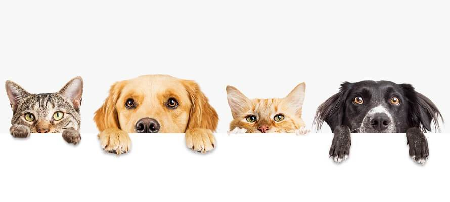

Welcome to PET MART website! We are dedicated to providing pet owners with high-quality foods and accessories products that cater to the health and happiness of their furry friends. Our company was founded by a team of passionate animal lovers who wanted to make a positive impact in the pet industry.
At our website, you will find a wide range of pet food options. We source our products from trusted suppliers who share our commitment to quality and safety. Our selection of food is designed to meet the unique dietary needs of all types of pets.
In addition to our food selection, we also offer a variety of pet accessories that enhance the well-being of pets. Our products include toys, grooming supplies, leashes and collars, and more. We carefully select our accessories to ensure they are safe, durable, and beneficial to pets' health and happiness.
Thank you for visiting our website and for your support of our mission. We hope you find the perfect food and accessories for your furry friend and look forward to serving you for all your future pet needs.
